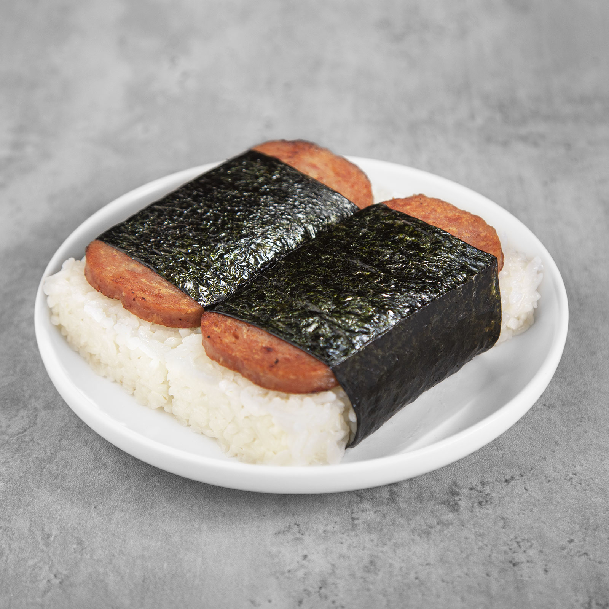

Spam Musubi

Description
A Hawaiian snack that is enjoyed throughout the entire state no matter what island you are on. It is an extremely convenient snack that can even be found at 7-Evelen's and enjoyed by locals. It is originally based on the Japanese dish rice balls or onigiri. However it looks much more like sushi than your traditional rice ball.
This dish is really simple and easy to make and only requires 4 ingredients that are all easily obtainable at your local supermarket. However, a musubi mold helps immensely for the final steps. If you do not have a musubi mold, you can make one yourself with the can that your spam came in.
Ingredients
- Spam
- Sushi Rice
- Roasted Nori Sheets
- Teriyaki Sauce
Steps
- Cut the Spam into 7 slices. Try to make all 7 slices the same size.
- Marinate the sliced Spam in the teriyaki sauce.
- While the Spam is marinating cook 2 cups of rice.
- Grill the Spam on a pan at medium heat for about 5-7 minutes cooking both sides.
- After your Spam is cooked, cut the nori sheets into halves and place them under your musubi mold.
- Take your cooked rice and place some into the mold until it is about 1cm tall when flattened.
- Remove your mold and place the sliced Spam on top of the rice.
- Wrap the nori around the rice and Spam. Your musubi is now finished, enjoy!